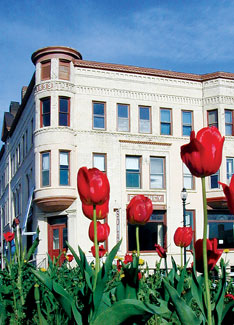
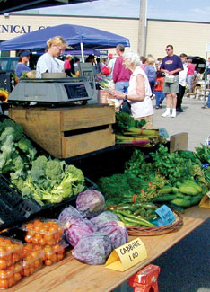
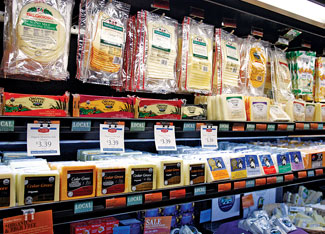

The tiny town of Viroqua, Wisc., 90 miles north of Madison, is a bellwether community in changing times. Despite continuing mainstream focus on growth and the quantity of life, Viroqua emphasizes sustainability, preservation and quality of life. A good example is the Viroqua Food Cooperative on North Main Street.
A walk through the co-op’s aisles is a little like a reception line; you feel like you’re actually meeting the growers, whose names, faces and farms are prominently displayed. “Featured Local Cheese,” says a sign in front of apple-smoked cheddar cheese from a local dairy farm. “Hand-rubbed with paprika. Won first place at the American Cheese Society competition,” the sign explains. What the co-op is selling is a way of life, and Viroqua residents are buying it. In the past few years, co-op membership has expanded from 890 to about 2,000, and the size of its new store is seven times larger than the old.
The Viroqua area has one of the densest populations of organic farmers in the country, many of which are members of the Organic Valley farm cooperative headquartered near Viroqua. When the size and clout of corporate farms threatened the region’s small family farms, growers united to create a market niche for organic food. From its original membership of seven farmers, Organic Valley has grown to more than 1,200 family farms. The strategy works: Small dairy farmer Paul Deutsch is paid 25 percent more per gallon of milk than conventional producers.
Deutsch recalls the crisis local businesses faced when Wal-Mart came to town in the late 1980s - seven businesses went broke. But Viroqua rallied, becoming “The Town That Beat Wal-Mart,” as coined by Smithsonian magazine in 1992, by revamping small business inventories to sell merchandise that Wal-Mart didn’t. They took advantage of business consulting paid for by the state, learned how to conduct market surveys and thus brought Main Street back to life. Since 1989, Viroqua has seen 56 new businesses start up, creating more than 150 new jobs.
Population: 4,383
Median House Price: $92,200
Climate: Cold winters, humid summers. January average: 12 degrees; July average: 70 degrees.
Natural Assets: Elevation: 1,277 feet; Wooded parks such as Wildcat Mountain State Park and Kickapoo Valley Reserve provide scenic trails; pastoral countryside; abundant fishing and canoeing.
Sustainability Initiatives: Stronghold of organic, sustainable agriculture and natural resource preservation.
Check out the other towns on our 2009 list of Great Places You’ve Never Heard Of.
|
 TERRY NOBLE Viroqua’s Fortney Hotel |
 TERRY NOBLE Viroqua’s Saturday Farmers Market |
 ERIC WUENNENBURG Say “Cheese!” You’ll find quite a selection of local cheeses at the Viroqua Food Cooperative. |